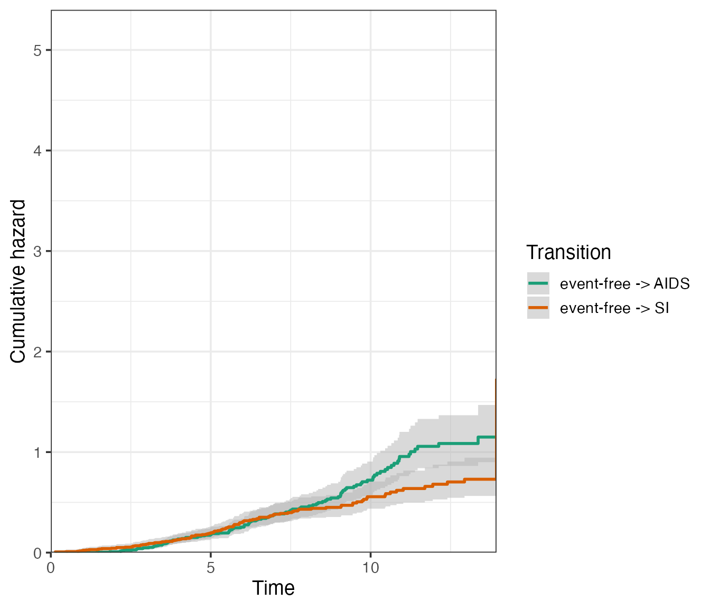
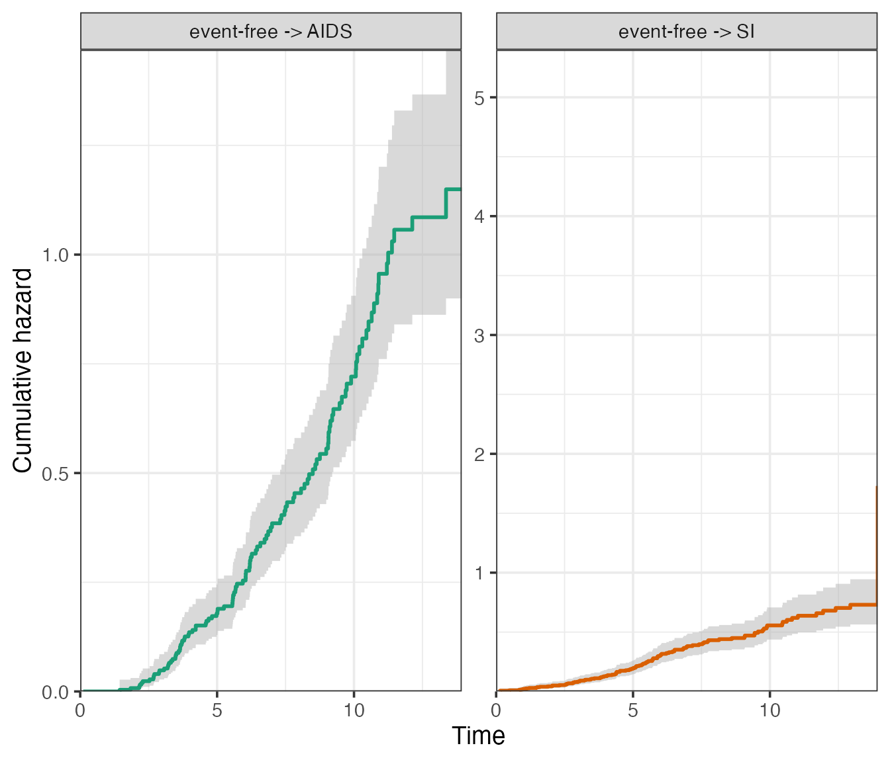
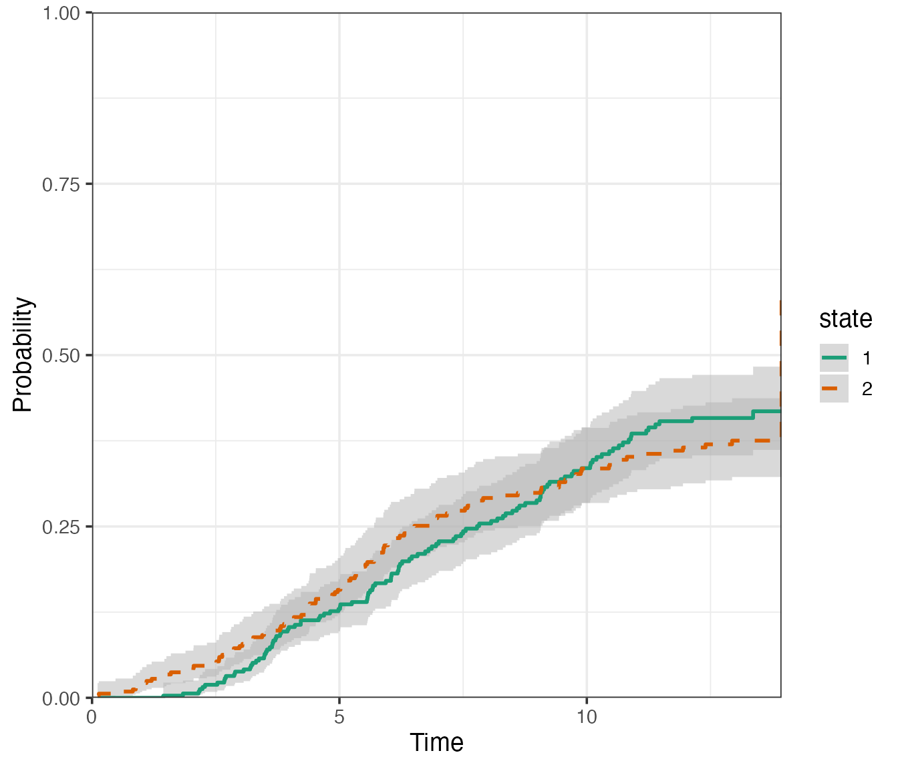
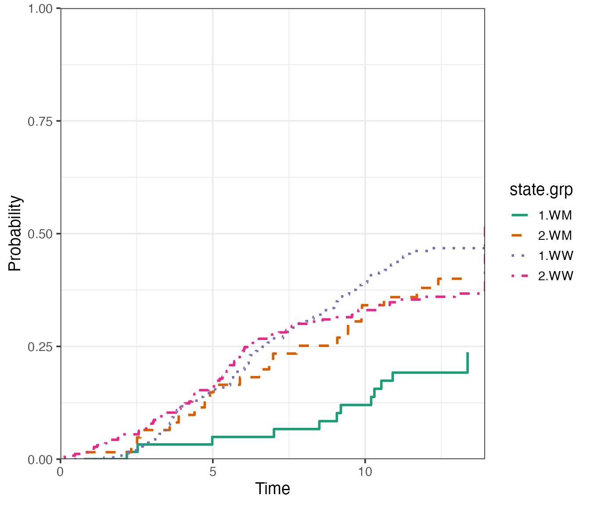
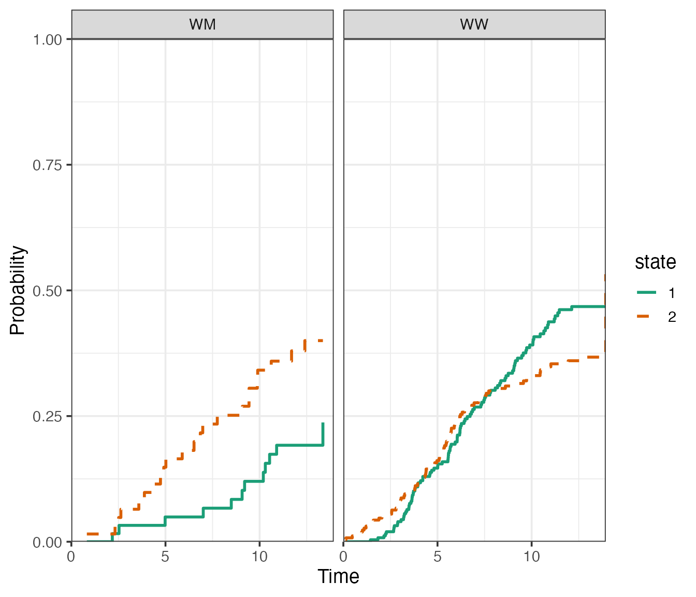
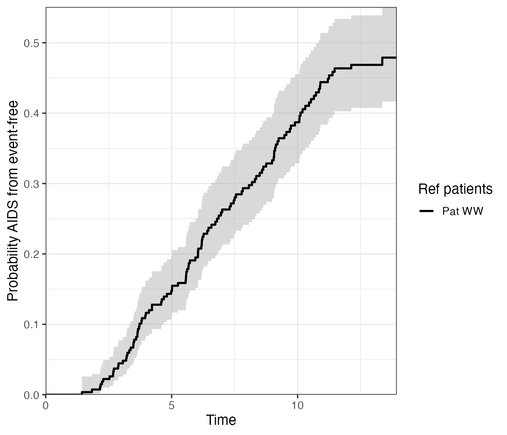
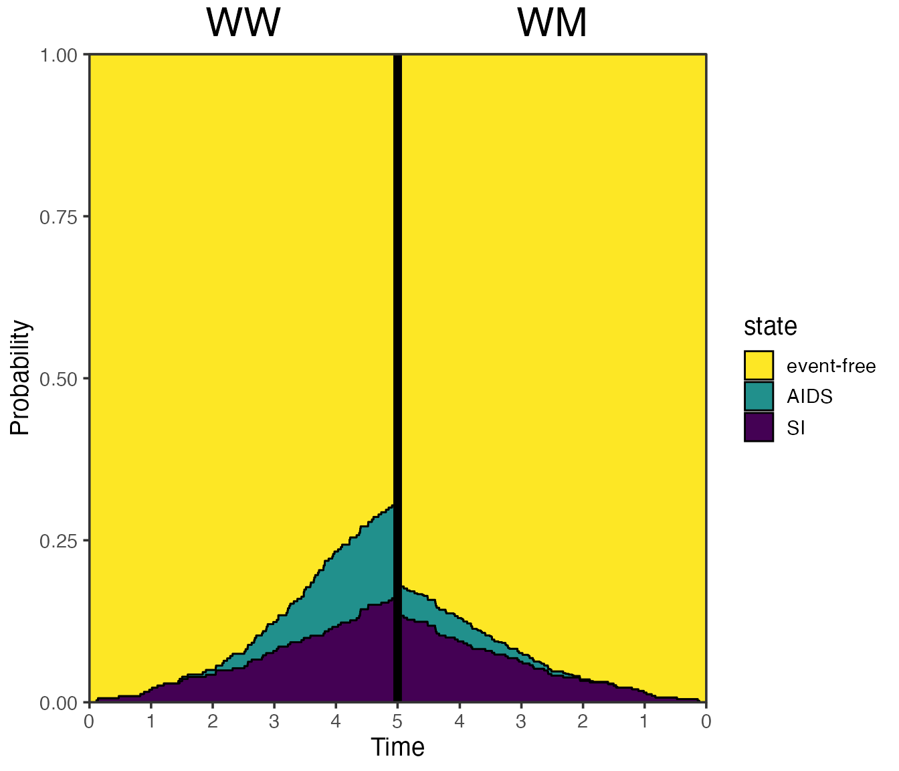

Visualising multi-state models using mstate
Edouard F. Bonneville
29 November 2024
Source:vignettes/visuals_demo.Rmd
visuals_demo.RmdPreamble
The purpose of the present vignette is to demonstrate the
visualisation capacities of mstate, using both base R graphics
and the ggplot2 package (Wickham
2016). To do so, we will use the dataset used to illustrate
competing risks analyses in Section 3 of the Tutorial by Putter, Fiocco, and Geskus (2007) . The dataset
is available in mstate under the object name
aidssi.
We can begin by loading both the mstate and ggplot2 libraries, and set a general theme for our plots:
# Load libraries
library(mstate)
#> Loading required package: survival
library(ggplot2)
# Set general ggplot2 theme
theme_set(theme_bw(base_size = 14))We can then proceed to load the dataset, and prepare it for a
competing risks analysis using msprep(). The steps are
described in more detail in the main
vignette.
# Load data
data("aidssi")
head(aidssi)
#> patnr time status cause ccr5
#> 1 1 9.106 1 AIDS WW
#> 2 2 11.039 0 event-free WM
#> 3 3 2.234 1 AIDS WW
#> 4 4 9.878 2 SI WM
#> 5 5 3.819 1 AIDS WW
#> 6 6 6.801 1 AIDS WW
# Shorter name
si <- aidssi
# Prepare transition matrix
tmat <- trans.comprisk(2, names = c("event-free", "AIDS", "SI"))
tmat
#> to
#> from event-free AIDS SI
#> event-free NA 1 2
#> AIDS NA NA NA
#> SI NA NA NA
# Run msprep
si$stat1 <- as.numeric(si$status == 1)
si$stat2 <- as.numeric(si$status == 2)
silong <- msprep(
time = c(NA, "time", "time"),
status = c(NA, "stat1", "stat2"),
data = si,
keep = "ccr5",
trans = tmat
)
# Run cox model
silong <- expand.covs(silong, "ccr5")
c1 <- coxph(Surv(time, status) ~ ccr5WM.1 + ccr5WM.2 + strata(trans),
data = silong)Visualising cumulative baseline hazards using
plot.msfit()
Using msfit(), we can obtain patient-specific transition
hazards. We look here at a patient with a CCR5 genotype “WW” (wild type
allele on both chromosomes).
# Data to predict
WW <- data.frame(
ccr5WM.1 = c(0, 0),
ccr5WM.2 = c(0, 0),
trans = c(1, 2),
strata = c(1, 2)
)
# Make msfit object
msf.WW <- msfit(
object = c1,
newdata = WW,
trans = tmat
)The cumulative baseline hazards can be plotted simply by using:
plot(msf.WW)
If we specify the argument use.ggplot = TRUE, the
plot method will return a ggplot object.
plot(msf.WW, use.ggplot = TRUE)
When using the argument type = "separate", the base R
plot will return a separate plot for each transition:

The ggplot2 version will return a facetted plot, where the
axis scales can either be kept “fixed”, or “free” using the
scale_type argument. It is essentially the same argument as
scales from the facet_wrap() function of
ggplot2, see ?ggplot2::facet_wrap.
# Fixed scales
plot(msf.WW, type = "separate", use.ggplot = TRUE, scale_type = "fixed")
# Free scales
plot(msf.WW, type = "separate", use.ggplot = TRUE, scale_type = "free", xlim = c(0, 15))
The remaining arguments are standard plotting adjustments, which will
work for both the ggplot2 and base R version of the plots. For
details, see ?mstate::plot.msfit. Any further adjustments
that are not available through the function arguments (such as plot
title) can simply be added using standard ggplot2 syntax using
+, or graphics functions such as title(). The
following is a customised example:
par(mfrow = c(1, 1))
# A base R customised plot
plot(
msf.WW,
type = "single",
cols = c("blue", "black"), # or numeric e.g. c(1, 2)
xlim = c(0, 15),
legend.pos = "top",
lty = c("dashed", "solid"),
use.ggplot = FALSE
)
title("Cumulative baseline hazards")
# A ggplot2 customised plot
plot(
msf.WW,
type = "single",
cols = c("blue", "black"), # or numeric e.g. c(1, 2)
xlim = c(0, 15),
lty = c("dashed", "solid"),
legend.pos = "bottom",
use.ggplot = TRUE
) +
# Add title and center
ggtitle("Cumulative baseline hazards") +
theme(plot.title = element_text(hjust = 0.5))
Available using use.ggplot = TRUE are the confidence
intervals around the cumulative hazards, which can be obtained by
specifying conf.type of type “plain” or “log”, for example
in single plot:
plot(
msf.WW,
type = "single",
use.ggplot = TRUE,
conf.type = "log",
conf.int = 0.95
)
Or else, in a facetted plot:
plot(
msf.WW,
type = "separate",
use.ggplot = TRUE,
conf.type = "log",
conf.int = 0.95,
scale_type = "free_y"
)
Visualising transition probabilities using
plot.probtrans()
The transition hazards obtained in the previous section can be used
to obtain patient-specific transition probabilities using
probtrans(). Here, we would like to predict from the
beginning of follow-up (predt = 0).
# Run probtrans
pt.WW <- probtrans(msf.WW, predt = 0)
# Example predict at different times
summary(pt.WW, times = c(1, 5, 10))
#>
#> Prediction from state 1 :
#> times pstate1 pstate2 pstate3 se1 se2 se3
#> 1 1 0.9805172 0.0000000 0.01948279 0.007899257 0.00000000 0.007899257
#> 2 5 0.6887491 0.1471596 0.16409130 0.028250825 0.02189893 0.022200323
#> 3 10 0.2772999 0.3870165 0.33568358 0.030015241 0.03202897 0.030204083
#> lower1 lower2 lower3 upper1 upper2 upper3
#> 1 0.9651565 0.0000000 0.008801028 0.9961223 0.0000000 0.04312897
#> 2 0.6355458 0.1099311 0.125870614 0.7464063 0.1969956 0.21391771
#> 3 0.2242925 0.3290677 0.281410843 0.3428346 0.4551702 0.40042333The plot method for probtrans objects
allows to visualise the transition probabilities in various ways, using
both functionality from base R graphics and ggplot2.
Filled/stacked plots
The default is a so-called “filled” plot, where the transition
probabilities are represented by coloured areas. The from
argument allows the user to choose the state to predict from (default is
1, the first state).
plot(pt.WW, from = 1)
Again, the use.ggplot = TRUE argument can be used to
return a ggplot object instead:
# from = 1 implied
plot(pt.WW, use.ggplot = TRUE)
Note that the ggplot2 version of the plot places the state
labels in a legend rather than labels in the plot itself. If we prefer
the latter, we can specify label = annotate instead - and
change the size of the labels with cex.
plot(pt.WW, use.ggplot = TRUE, label = "annotate", cex = 6) 
More generally, we can also adjust the stacking order using the
ord argument, which takes a numeric vector equal to the
number of states, in the desired stacking order (bottom to top).
# Check state order again from transition matrix
tmat
#> to
#> from event-free AIDS SI
#> event-free NA 1 2
#> AIDS NA NA NA
#> SI NA NA NA
# Plot aids (state 2), then event-free (state 1), and SI on top (state 3)
plot(pt.WW, use.ggplot = TRUE, ord = c(2, 1, 3)) 
You can also choose to forgo the colour, and specify
type = "stacked" instead:
plot(pt.WW, use.ggplot = TRUE, type = "stacked") 
Single and separate plots, confidence intervals
Instead of visualising the probabilities using stacked areas, we can go the traditional route and use a single line per state. Confidence intervals can then be added.
By specifying type = "separate", the base R plot will
return a separate plot for all three states.

The ggplot2 version will return a facetted plot, with one state per facet. It also accommodates confidence intervals, which are either of type “log” (default) or “plain”.
plot(
pt.WW,
use.ggplot = TRUE,
type = "separate",
conf.int = 0.95, # 95% level
conf.type = "log"
) 
These confidence intervals can be omitted using
conf.type = "none".
What if we wanted all of these in one plot? For that, we can use the
type = single option:
plot(
pt.WW,
use.ggplot = TRUE,
type = "single",
conf.int = 0.95, # 95% level
conf.type = "log"
) 
As before, the confidence intervals can be omitted.
plot(
pt.WW,
use.ggplot = TRUE,
type = "single",
conf.type = "none",
lty = c(1, 2, 3), # change the linetype
lwd = 1.5,
) 
If the multi-state model is large, we may be only interested in
plotting the probabilities for a subset of states together. This subset
will not sum up to 1, so the stacked/filled plots are not appropriate.
There is no set function to do this, but it can be done by extracting
the data from a plot.probtrans()-based ggplot object as
follows:
# Run plot and extract data using $data
dat_plot <- plot(x = pt.WW, use.ggplot = TRUE, type = "single")$data
# Begin new plot - Exclude or select states to be plotted
ggplot(data = dat_plot[state != "event-free", ], aes(
x = time,
y = prob,
ymin = CI_low,
ymax = CI_upp,
group = state,
linetype = state,
col = state
)) +
# Add CI and lines; change fill = NA to remove CIs
geom_ribbon(col = NA, fill = "gray", alpha = 0.5) +
geom_line() +
# Remaining details
labs(x = "Time", y = "Cumulative Incidence") +
coord_cartesian(ylim = c(0, 1), xlim = c(0, 14), expand = 0)
If interest lies in plotting the probability of a single
state, the procedure above can be used, or the
vis.multiple.pt() function presented further could be used
directly.
Plotting non-parametric cumulative incidence functions
The Cuminc() function in mstate produces (for
competing risks data) the non-parametric Aalen-Johansen estimates of the
cumulative incidence functions. This is the same as is obtained in the
cmrpsk package with the function cuminc().
In mstate, an object of class “Cuminc” can also be plotted as follows:
cum_incid <- Cuminc(
time = "time",
status = "status",
data = si
)
plot(
x = cum_incid,
use.ggplot = TRUE,
conf.type = "log",
lty = 1:2,
conf.int = 0.95,
)
In the case where this a grouping variable:
cum_incid_grp <- Cuminc(
time = "time",
status = "status",
group = "ccr5",
data = si
)
plot(
x = cum_incid_grp,
use.ggplot = TRUE,
conf.type = "none",
lty = 1:4,
facet = FALSE
)
plot(
x = cum_incid_grp,
use.ggplot = TRUE,
conf.type = "none",
lty = 1:4,
facet = TRUE
)
Visualising multiple probtrans objects
We may also be interested in comparing the predicted probabilities for multiple reference patients. First, we need to create as many msfit/probtrans objects as there are reference patients of interest:
# 1. Prepare patient data - both CCR5 genotypes
WW <- data.frame(
ccr5WM.1 = c(0, 0),
ccr5WM.2 = c(0, 0),
trans = c(1, 2),
strata = c(1, 2)
)
WM <- data.frame(
ccr5WM.1 = c(1, 0),
ccr5WM.2 = c(0, 1),
trans = c(1, 2),
strata = c(1, 2)
)
# 2. Make msfit objects
msf.WW <- msfit(c1, WW, trans = tmat)
msf.WM <- msfit(c1, WM, trans = tmat)
# 3. Make probtrans objects
pt.WW <- probtrans(msf.WW, predt = 0)
pt.WM <- probtrans(msf.WM, predt = 0)Afterwards, we can supply the probtrans objects in a list into the
vis.multiple.pt() function. This will visualise the
probability of being in state number to over time, given
the reference patient was in state number from at the
predt time supplied in probtrans().
The example below visualises the probability of being in state AIDS, given event-free at time 0. The two lines/associated confidence intervals correspond to the reference patients - both with a different CCR5 genotype (“WW” or “WM”).
vis.multiple.pt(
x = list(pt.WW, pt.WM),
from = 1,
to = 2,
conf.type = "log",
cols = c(1, 2),
labels = c("Pat WW", "Pat WM"),
legend.title = "Ref patients"
)
This function could just as well be used for a single probtrans object:
vis.multiple.pt(
x = list(pt.WW),
from = 1,
to = 2,
conf.type = "log",
cols = c(1, 2),
labels = c("Pat WW", "Pat WM"),
legend.title = "Ref patients"
)
Note this function is only available in the ggplot format.
A mirrored plot
Multiple probtrans objects can also be compared by means of a mirrored plot. The idea is to compare the probabilities of being in (all) states between two references patients at a particular horizon. In addition to reference patients, different subsets of the data could equally be compared.
vis.mirror.pt(
x = list(pt.WW, pt.WM),
titles = c("WW", "WM"),
horizon = 10
)
Omitting the horizon argument will default to plotting
both sides with their respective maximum follow-up time, so it may be
asymmetric. We thus recommend to always use the horizon
argument.
If for example time is in years, and follow-up is extremely short,
you may want to override the breaks on the x-axis. This can be done
using the breaks_x_left and breaks_x_right
arguments.
vis.mirror.pt(
x = list(pt.WW, pt.WM),
titles = c("WW", "WM"),
size_titles = 8,
horizon = 5,
breaks_x_left = c(0, 1, 2, 3, 4, 5),
breaks_x_right = c(0, 1, 2, 3, 4),
ord = c(3, 2, 1)
)
Saving outputs
Any plots made with mstate using the
use.ggplot = TRUE will return a ggplot object, which can be
saved to a desired format by using ggplot2::ggsave().
Please refer to the article
written by the ggplot2 team on using
ggplot2::ggsave().
Reproducibility
Reproducibility receipt
# Date/time
Sys.time()
#> [1] "2024-11-29 16:41:38 GMT"
# Environment
sessionInfo()
#> R version 4.4.2 (2024-10-31)
#> Platform: aarch64-apple-darwin20
#> Running under: macOS Sequoia 15.1.1
#>
#> Matrix products: default
#> BLAS: /Library/Frameworks/R.framework/Versions/4.4-arm64/Resources/lib/libRblas.0.dylib
#> LAPACK: /Library/Frameworks/R.framework/Versions/4.4-arm64/Resources/lib/libRlapack.dylib; LAPACK version 3.12.0
#>
#> locale:
#> [1] en_US.UTF-8/en_US.UTF-8/en_US.UTF-8/C/en_US.UTF-8/en_US.UTF-8
#>
#> time zone: Europe/London
#> tzcode source: internal
#>
#> attached base packages:
#> [1] stats graphics grDevices utils datasets methods base
#>
#> other attached packages:
#> [1] ggplot2_3.5.1 mstate_0.3.3 survival_3.7-0
#>
#> loaded via a namespace (and not attached):
#> [1] Matrix_1.7-1 gtable_0.3.6 jsonlite_1.8.9 dplyr_1.1.4
#> [5] compiler_4.4.2 tidyselect_1.2.1 jquerylib_0.1.4 splines_4.4.2
#> [9] systemfonts_1.1.0 scales_1.3.0 textshaping_0.4.0 yaml_2.3.10
#> [13] fastmap_1.2.0 lattice_0.22-6 R6_2.5.1 labeling_0.4.3
#> [17] generics_0.1.3 knitr_1.49 htmlwidgets_1.6.4 tibble_3.2.1
#> [21] desc_1.4.3 munsell_0.5.1 RColorBrewer_1.1-3 bslib_0.8.0
#> [25] pillar_1.9.0 rlang_1.1.4 utf8_1.2.4 cachem_1.1.0
#> [29] xfun_0.49 fs_1.6.5 sass_0.4.9 viridisLite_0.4.2
#> [33] cli_3.6.3 withr_3.0.2 pkgdown_2.1.1 magrittr_2.0.3
#> [37] digest_0.6.37 grid_4.4.2 rstudioapi_0.17.1 lifecycle_1.0.4
#> [41] vctrs_0.6.5 evaluate_1.0.1 glue_1.8.0 data.table_1.16.2
#> [45] farver_2.1.2 ragg_1.3.3 fansi_1.0.6 colorspace_2.1-1
#> [49] rmarkdown_2.29 pkgconfig_2.0.3 tools_4.4.2 htmltools_0.5.8.1